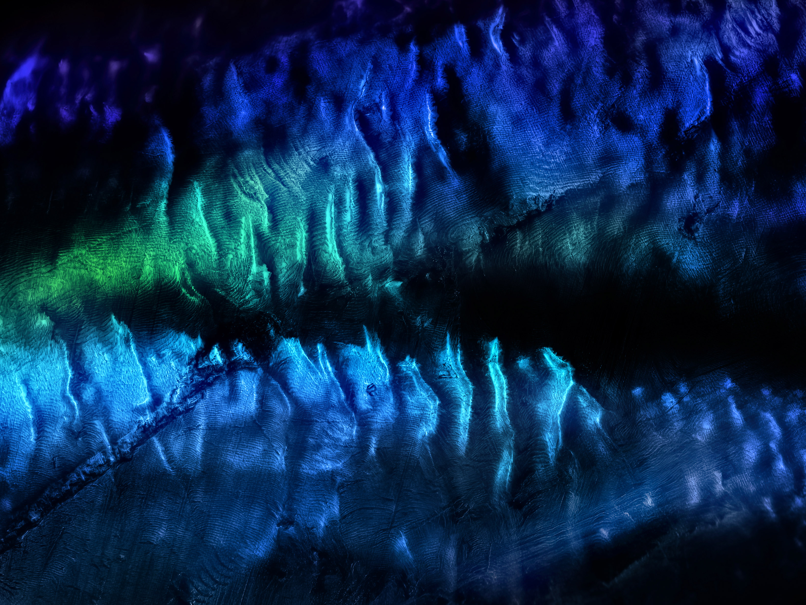

Perescope

Utilising microscope imaging techniques and experimentation with a wide range of media, Peregrin Hyde creates visually striking artworks and live experiences which elicit awe and curiosity, fusing art with science. These explorations of microscopic phenomena in print and video establish intimate contact with minutiae reality, revealing the staggering detail hidden in the hyper-textured universe.
In video and performance, live "evolving paintings" reveal the frenetic nature of simple chemistry and mundane occurrences, confronting viewers with uncanny paradoxes of scale, unseen domains of natural processes and the fingerprint of fundamental physical laws.